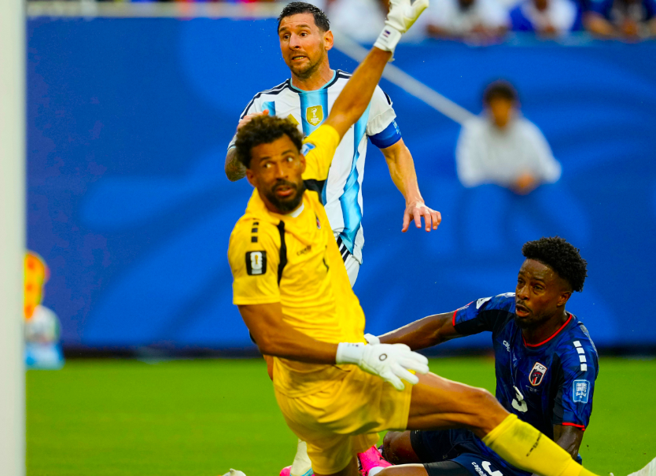

• मियामी •
फिफा विश्वचषक २०२६ मधील 'राउंड ऑफ ३२' च्या अत्यंत चुरशीच्या सामन्यात गतविजेत्या अर्जेंटिनाने नवख्या केप व्हर्डेवर अतिरिक्त वेळेत (Extra Time) ३-२ असा थरारक विजय मिळवला आहे. या विजयासह अर्जेंटिनाने स्पर्धेच्या 'अंतिम १६' (Round of 16) मध्ये प्रवेश केला आहे. पहिल्यांदाच विश्वचषक खेळणाऱ्या छोट्याशा केप व्हर्डे संघाने बलाढ्य अर्जेंटिनाला अतिरिक्त वेळेपर्यंत रोखून धरत फुटबॉल चाहत्यांची मने जिंकली.
सामन्याच्या २९ व्या मिनिटाला कर्णधार लिओनेल मेस्सीने गोल करत अर्जेंटिनाला १-० अशी आघाडी मिळवून दिली होती. मात्र, ५९ व्या मिनिटाला केप व्हर्डेच्या डेरॉय डुआर्टेने गोल करून सामन्यात १-१ अशी बरोबरी साधली. निर्धारित ९० मिनिटांपर्यंत हीच स्थिती राहिल्याने सामना अतिरिक्त वेळेत खेळवण्यात आला. अतिरिक्त वेळेच्या सुरुवातीलाच, ९३ व्या मिनिटाला लिसान्ड्रो मार्टिनेझने गोल करत अर्जेंटिनाला पुन्हा आघाडी मिळवून दिली. पण काही वेळातच सिडनी लोपेस कॅब्रालने स्पर्धेतील सर्वोत्कृष्ट गोलपैकी एक असा अप्रतिम गोल करत केप व्हर्डेला पुन्हा २-२ अशी बरोबरी साधून दिली. अखेर ११० व्या मिनिटाला क्रिस्टियन रोमेरोने निर्णायक गोल करत अर्जेंटिनाचा ३-२ असा विजय निश्चित केला.
या सामन्यात लिओनेल मेस्सीने अनेक ऐतिहासिक विक्रम आपल्या नावावर केले. विश्वचषकाच्या इतिहासात ३० सामने खेळणारा तो जगातील एकमेव खेळाडू ठरला आहे. तसेच, फिफा विश्वचषकांमध्ये २० गोलांचा टप्पा ओलांडणारा तो पहिलाच खेळाडू बनला आहे. या स्पर्धेतील मेस्सीचा हा सातवा गोल असून, तो आता फ्रान्सच्या किलियन एम्बाप्पेला मागे टाकत सर्वाधिक गोल करणाऱ्यांच्या 'गोल्डन बूट' (Golden Boot) शर्यतीत आघाडीवर पोहोचला आहे. विशेष म्हणजे, विश्वचषकातील सलग ८ सामन्यांमध्ये गोल करण्याचा पराक्रमही मेस्सीने केला आहे.
अल्जेरिया, ऑस्ट्रिया आणि जॉर्डन यांसारख्या संघांचा सहज पराभव करणाऱ्या अर्जेंटिनाला केप व्हर्डेने दिलेली झुंज कौतुकास्पद ठरली. साखळी फेरीत अपराजित राहिलेल्या केप व्हर्डेने संपूर्ण स्पर्धेत आपली छाप सोडली. या विजयासोबतच अर्जेंटिनाने नॉर्वे, इंग्लंड, फ्रान्स, स्पेन, ब्राझील आणि पोर्तुगाल यांच्या पंक्तीत जाऊन 'राउंड ऑफ १६' मधील आपले स्थान पक्के केले आहे.
• टोरोंटो •
फिफा विश्वचषक २०२६ मधील 'राउंड ऑफ ३२' च्या अटीतटीच्या सामन्यात पोर्तुगालने क्रोएशियाचा २-१ असा पराभव केला आहे. या विजयासह पोर्तुगालने स्पर्धेच्या पुढील फेरीत प्रवेश केला असून, सामन्याच्या अंतिम क्षणी 'व्हार' (VAR) आणि 'स्निको' (Snicko) तंत्रज्ञानाच्या वापराने दिलेला निर्णय फुटबॉल वर्तुळात चर्चेचा विषय ठरला आहे.
सामन्याच्या ५३ व्या मिनिटाला इव्हान पेरिसिकने गोल करत क्रोएशियाला १-० अशी आघाडी मिळवून दिली होती. मात्र, काही वेळातच पोर्तुगालच्या ख्रिस्तियानो रोनाल्डोने मिळालेल्या पेनल्टीचे अचूक गोलमध्ये रूपांतर करत सामन्यात १-१ अशी बरोबरी साधली. सामना अतिरिक्त वेळेकडे (Extra Time) झुकत असताना, ९४ व्या मिनिटाला गोन्सालो रामोसने हेडरद्वारे उत्कृष्ट गोल करून पोर्तुगालला २-१ अशी महत्त्वपूर्ण आघाडी मिळवून दिली.
सामन्यातील निर्णायक आणि वादग्रस्त प्रसंग १०३ व्या मिनिटाला घडला. क्रोएशियाच्या मारिओ पसालिकच्या पासवर जोसको ग्वार्डिओलने चेंडू थेट गोलपोस्टमध्ये धाडला आणि क्रोएशियाने बरोबरी साधल्याचा आनंद साजरा करण्यास सुरुवात केली. मात्र, फुटबॉलमधील सेन्सरवर आधारित 'स्निको' तंत्रज्ञानाच्या आधारे तपासणी केली असता, चेंडू बॉक्समध्ये येत असताना क्रोएशियाच्या इगोर माटानोविचच्या डोक्याला अत्यंत सूक्ष्मपणे स्पर्श करून गेल्याचे निदर्शनास आले. मुख्य रेफरी एस्पेन एस्कास यांनी मॉनिटरवर या घटनेची सखोल तपासणी केली आणि हा गोल 'ऑफसाईड' (Offside) ठरवत अवैध घोषित केला.
या निर्णयामुळे क्रोएशियाचे विश्वचषकातील आव्हान दुर्दैवीरीत्या संपुष्टात आले. या निर्णयानंतर मैदानावरील क्रोएशियन चाहत्यांनी तीव्र संताप व्यक्त करत मैदानावर पाण्याच्या बाटल्या फेकल्या. परिस्थिती नियंत्रणात आणण्यासाठी इव्हान पेरिसिकला स्वतः प्रेक्षकांना शांत करण्यासाठी पुढे यावे लागले. या विजयामुळे पोर्तुगालने 'राउंड ऑफ १६' मध्ये प्रवेश केला असून, आता त्यांचा पुढील सामना स्पेनविरुद्ध होणार आहे.